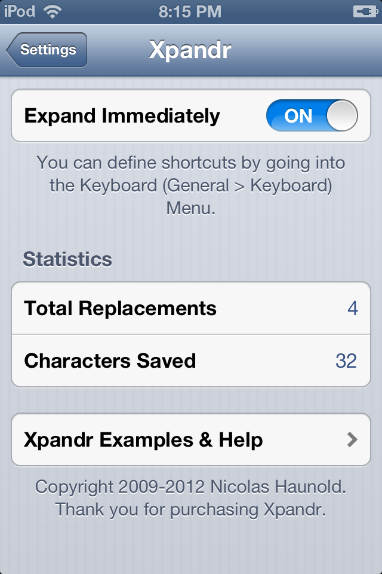
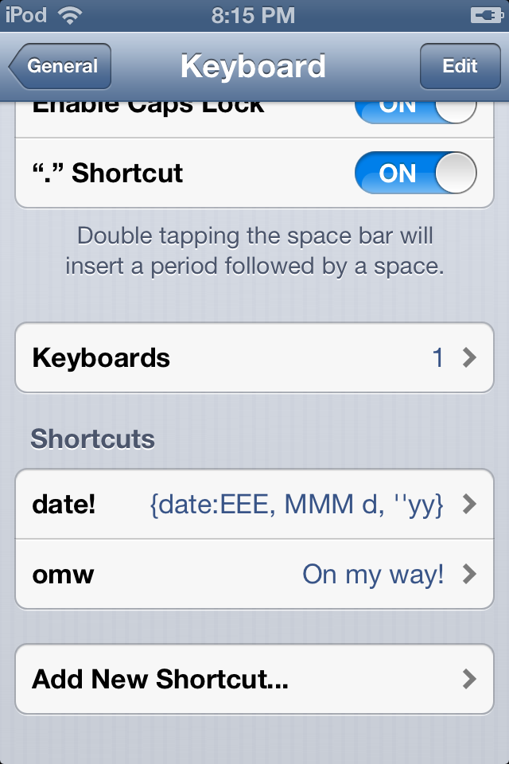

Xpandr 2
by Nicolas Haunold
Xpandr adds powerful features to the integrated iOS keyboard shortcut system on your iPhone/iPod touch/iPad and works globally in every application on your iOS device.
Stay Up-to-Date
Xpandr also adds more features to the shortcut system itself. Ever wanted to include the current date and time in your shortcut? Xpandr now allows you to do exactly that. For Geeks: It's fully compatible with RFC3339.
Automate
Xpandr can now automatically execute scripts whenever you type a shortcut. Ever wanted to have a shortcut which prints how much diskspace you have left on your device? With Xpandr, it's possible.
Xpandr 2 requires iOS 5.0 or higher.
Still using iOS 4.0 or lower?
Check out
Xpandr 1.0
.

Changelog